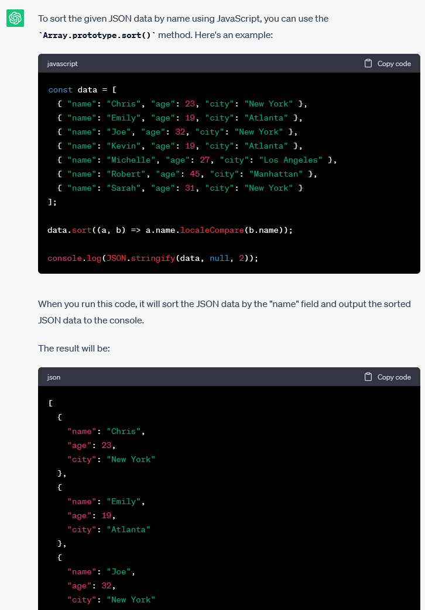
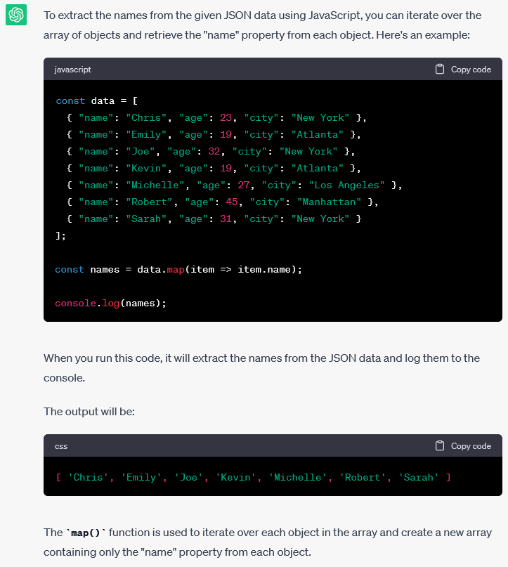
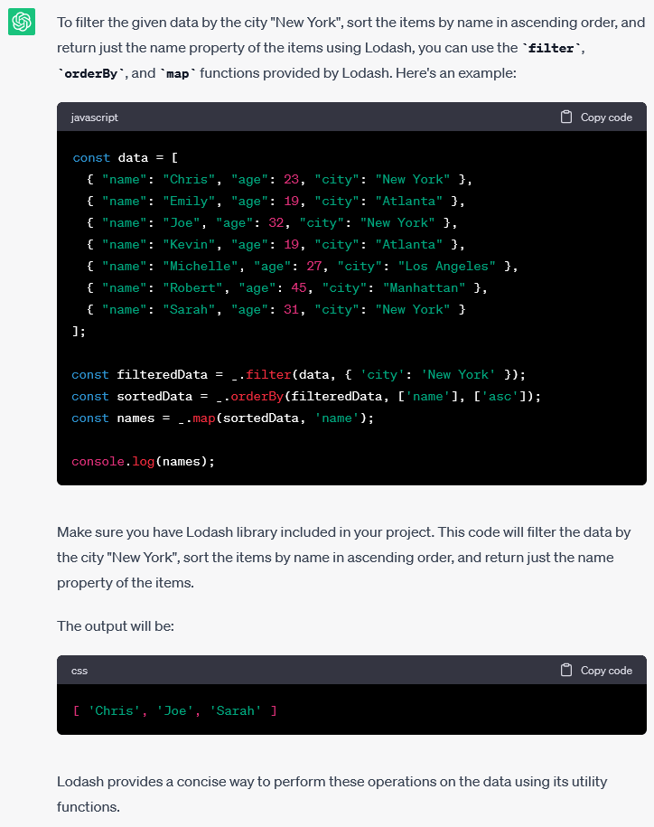
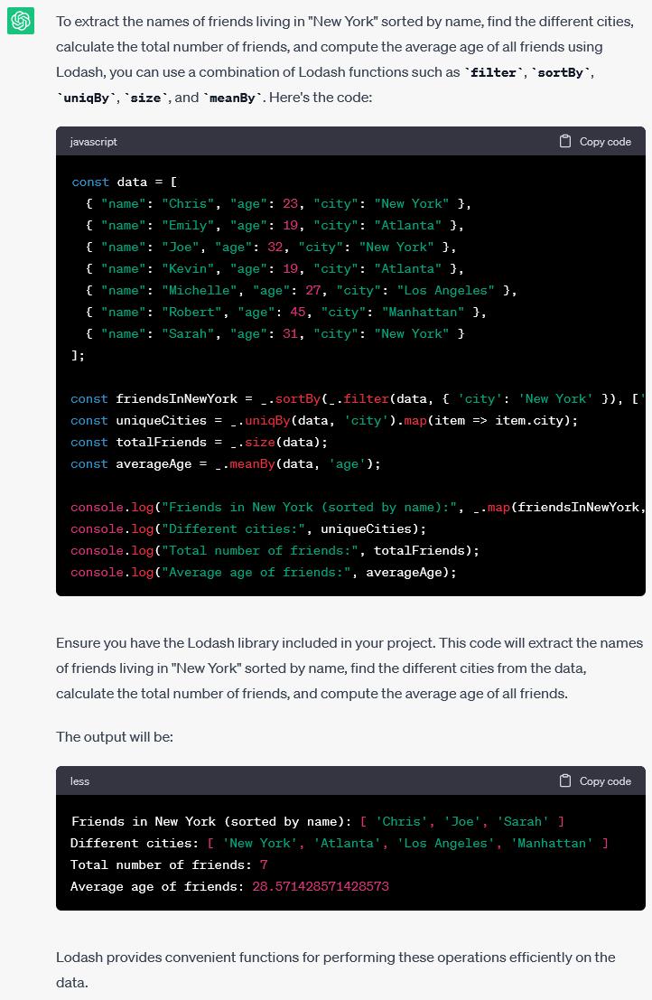
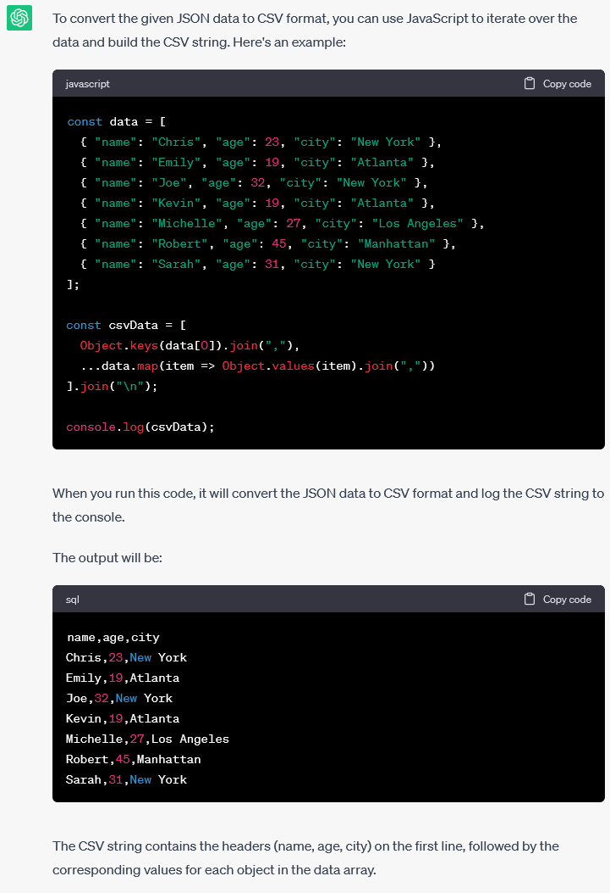
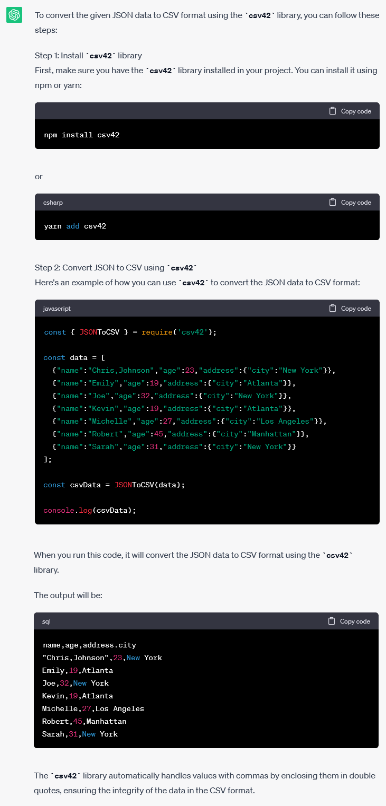

In this article we explore how to ChatGPT JSON data. We will query and transform JSON using a simple prompt. The article “Easily transform JSON data: a hands-on tutorial” explains how to query JSON using the tool JSON Editor Online. Let’s see if we can use ChatGPT to sort, filter, and transform JSON data.
How does ChatGPT work?
When trying out ChatGPT for the first time it feels like magic, as if you’re really talking to someone that knows and understands everything. It is important to know what ChatGPT actually is, so you understand what it can and can’t do.
ChatGPT is an artificial intelligence chatbot powered by an advanced language model. Basically, you input some text, then it outputs some text. It is trained on a huge amount of real world data, and based on that it outputs the text that is statistically the best match.
Interesting in this regard is to have a look at Eliza, one of the oldest chatbots which allows to have a “real” conversation. Understanding the ideas behind Eliza gives insight in the basics of an artificial intelligence chatbot.
Suppose we have an input “Hello, how are you doing?”. Can you guess what a likely response would be? Yes you can. And I think you can imagine that it is possible to write a piece of software that can correctly reply to such a question: you can input a lot of real world conversations between people, containing this very question. The software can look up these questions, see what the followup response in most of the cases is, and return this as a reply.
ChatGPT can analyze and generate fluent text,and it is really impressive what it can do. But ChatGPT does not actually understand what the text means. It can only combine and mix from the text that it is trained on. Some people summarize this as “a glorified autocomplete”. That sounds limiting, but if we use it within the right bounds, it can be a very helpful tool!
Getting started with ChatGPT
The easiest way to start with ChatGPT is to go to https://chat.openai.com and sign up with a Google, Microsoft, or Apple account. You’ll be presented with a chat box where you can enter a message. You can ask questions there like you would ask a human being.
For this tutorial, we will use a list with friends to query, it is the same data set as used in the hands-on tutorial mentioned before:
[
{ "name": "Chris", "age": 23, "city": "New York" },
{ "name": "Emily", "age": 19, "city": "Atlanta" },
{ "name": "Joe", "age": 32, "city": "New York" },
{ "name": "Kevin", "age": 19, "city": "Atlanta" },
{ "name": "Michelle", "age": 27, "city": "Los Angeles" },
{ "name": "Robert", "age": 45, "city": "Manhattan" },
{ "name": "Sarah", "age": 31, "city": "New York" }
]Sorting JSON data using ChatGPT
To sort the data, we can enter the following prompt:
Sort the following JSON data by name:
[
{ "name": "Chris", "age": 23, "city": "New York" },
{ "name": "Emily", "age": 19, "city": "Atlanta" },
{ "name": "Joe", "age": 32, "city": "New York" },
{ "name": "Kevin", "age": 19, "city": "Atlanta" },
{ "name": "Michelle", "age": 27, "city": "Los Angeles" },
{ "name": "Robert", "age": 45, "city": "Manhattan" },
{ "name": "Sarah", "age": 31, "city": "New York" }
]In my case, ChatGPT came up with a Python example, but I would like to see a JavaScript example. Therefore, let’s refine the question:
Sort the following JSON data by name using JavaScript:
[
{ "name": "Chris", "age": 23, "city": "New York" },
{ "name": "Emily", "age": 19, "city": "Atlanta" },
{ "name": "Joe", "age": 32, "city": "New York" },
{ "name": "Kevin", "age": 19, "city": "Atlanta" },
{ "name": "Michelle", "age": 27, "city": "Los Angeles" },
{ "name": "Robert", "age": 45, "city": "Manhattan" },
{ "name": "Sarah", "age": 31, "city": "New York" }
]The output of ChatGPT is exactly what we need. It comes up with JavaScript code to sort the data, and shows what the result will be:
Picking some fields out of JSON data using ChatGPT
Now, let’s try to pick some of the fields out of the data:
Pick the names out of the following JSON data using JavaScript:
[
{ "name": "Chris", "age": 23, "city": "New York" },
{ "name": "Emily", "age": 19, "city": "Atlanta" },
{ "name": "Joe", "age": 32, "city": "New York" },
{ "name": "Kevin", "age": 19, "city": "Atlanta" },
{ "name": "Michelle", "age": 27, "city": "Los Angeles" },
{ "name": "Robert", "age": 45, "city": "Manhattan" },
{ "name": "Sarah", "age": 31, "city": "New York" }
]ChatGPT correctly understands what we mean, and comes up with a good solution:
Filtering JSON data using ChatGPT
Now, let’s combine a few things: let’s filter the data by a city, sort the data by name, and pick the names out of the data:
Filter the following data by city "New York",
sort the items by name in ascending order,
then return just the name property of the items using Lodash:
[
{ "name": "Chris", "age": 23, "city": "New York" },
{ "name": "Emily", "age": 19, "city": "Atlanta" },
{ "name": "Joe", "age": 32, "city": "New York" },
{ "name": "Kevin", "age": 19, "city": "Atlanta" },
{ "name": "Michelle", "age": 27, "city": "Los Angeles" },
{ "name": "Robert", "age": 45, "city": "Manhattan" },
{ "name": "Sarah", "age": 31, "city": "New York" }
]ChatGPT correctly interprets our question, and comes up with a clear and easy to follow code example, which is impressive.
Note that to execute the code yourself, you can open the website of Lodash, open the JavaScript Developer Console (Ctrl+Shift+i), and then copy-paste the code example there.
More advanced JSON queries using ChatGPT
The hands-on tutorial ends with a more advanced JSON query that you have to write yourself. That requires knowing the precise function names and syntax of a number of Lodash functions. I don’t know about you, but I regularly have to look up the documentation to remember how it was again. ChatGPT can be of help here:
Extract the names of the friends living in “New York” sorted by name, the different cities, tot total number of friends, and the average age of all friends from the following data using Lodash:
Extract the names of the friends living in "New York" sorted by name,
the different cities, tot total number of friends, and the average age
of all friends from the following data using Lodash:
[
{ "name": "Chris", "age": 23, "city": "New York" },
{ "name": "Emily", "age": 19, "city": "Atlanta" },
{ "name": "Joe", "age": 32, "city": "New York" },
{ "name": "Kevin", "age": 19, "city": "Atlanta" },
{ "name": "Michelle", "age": 27, "city": "Los Angeles" },
{ "name": "Robert", "age": 45, "city": "Manhattan" },
{ "name": "Sarah", "age": 31, "city": "New York" }
]ChatGPT gives the following response:
It is amazing that ChatGPT knows how to interpret for example that it has to filter on the field “city” to find “the friends that live in New York”. And that it can actually generate the output of the code.
However…
ChatGPT made a calculation error. I only spotted this because we’re reproducing the results of the hands-on tutorial, and I know that the result of the average age of the friends should be 28, not 28.571428571428573 as ChatGPT says. The interesting thing is: the code example is correct, and if you execute it yourself, it will output an average age of 28.
That is concerning. Let’s think through the implications later, but first try out one more interesting request.
Convert JSON to CSV using ChatGPT
Let’s see if we can convert the JSON content to CSV:
Convert the following JSON data to CSV:
[
{ "name": "Chris,Johnson", "age": 23, "city": "New York" },
{ "name": "Emily", "age": 19, "city": "Atlanta" },
{ "name": "Joe", "age": 32, "city": "New York" },
{ "name": "Kevin", "age": 19, "city": "Atlanta" },
{ "name": "Michelle", "age": 27, "city": "Los Angeles" },
{ "name": "Robert", "age": 45, "city": "Manhattan" },
{ "name": "Sarah", "age": 31, "city": "New York" }
]The output is exactly what we need again. ChatGPT will build a minimal CSV parser in plain JavaScript:
Also, when making the JSON more complex: using commas that need to be escaped, and using nested objects, ChatGPT comes up with a working code example. The code becomes a bit unwieldy, bit we can simplify that by requesting to use a CSV library like csv42:
Convert the following JSON to CSV using csv42:
[
{ "name": "Chris,Johnson", "age": 23, "address": { "city": "New York" } },
{ "name": "Emily", "age": 19, "address": { "city": "Atlanta" } },
{ "name": "Joe", "age": 32, "address": { "city": "New York" } },
{ "name": "Kevin", "age": 19, "address": { "city": "Atlanta" } },
{ "name": "Michelle", "age": 27, "address": { "city": "Los Angeles" } },
{ "name": "Robert", "age": 45, "address": { "city": "Manhattan" } },
{ "name": "Sarah", "age": 31, "address": { "city": "New York" } }
]The response is:
This is great! You can execute this node.js code directly on RunKit: https://npm.runkit.com/csv42. However, that gives an error:
TypeError: JSONToCSV is not a functionLooking at the docs I see the actual function name is json2csv, not JSONToCSV. So apparently ChatGPT made that up. Fixing the function name indeed makes the code work. However, I’m left with this uneasy feeling again… does ChatGPT really look up the docs of the csv42 library? Or did it just pretend it knows what it is doing? Can I trust ChatGPT?
Conclusions about ChatGPT JSON
On the one hand, it is really impressive what ChatGPT can do. On the other hand, if I would ask these questions to an intern, I would expect no more than for them to be able to figure out these basic questions. The errors that ChatGPT makes already with the basic questions are worrying. Unlike a (human) intern that can actually learn, ChatGPT has no actual understanding of what it is doing.
If ChatGPT had feelings, I imagine it would feel like I sometimes did during a math exam when dealing with a math problem that I really had no clue about: “I have absolutely no idea what I’m doing. I remember some similar examples in the textbook, though unfortunately these were slightly different. Let me just write out some of those formulas and mix them together somehow. Let me hope that I accidentally turn out to have the right answer, or that the teacher overlooks the details. Maybe mentioning these impressive formulas looks convincing to the teacher, and hopefully he does not discover that I don’t have a clue about what I’m doing here.”
I agree with the opinion of many people writing about ChatGPT: don’t trust it and treat it like a beginning intern. Use it to augment your work, and always verify that its outputs are valid. Only use it for topics that you yourself are familiar with. Otherwise, you have no way to judge whether ChatGPT’s output makes sense or is garbage.
Where would I like to use ChatGPT in practice? I would love to see more AI features in my IDE, where it can maybe do the dumb work for me of generating unit tests. It can inform me about issues I’m overlooking, or suggest a better way to implement a specific function. Sort of a pair-programming assistant, an extra pair of eyes on my code.
If you want to learn more about the features and limitations of ChatGPT and the situations in which you can/can’t use ChatGPT I recommend reading “ChatGPT 101: What Is Generative AI (and How to Use It)”.
You can find the conversation I had with ChatGPT for this article at the following url: https://chat.openai.com/share/bacd416f-a7cb-4d64-9228-9ece930f2381. Have fun!